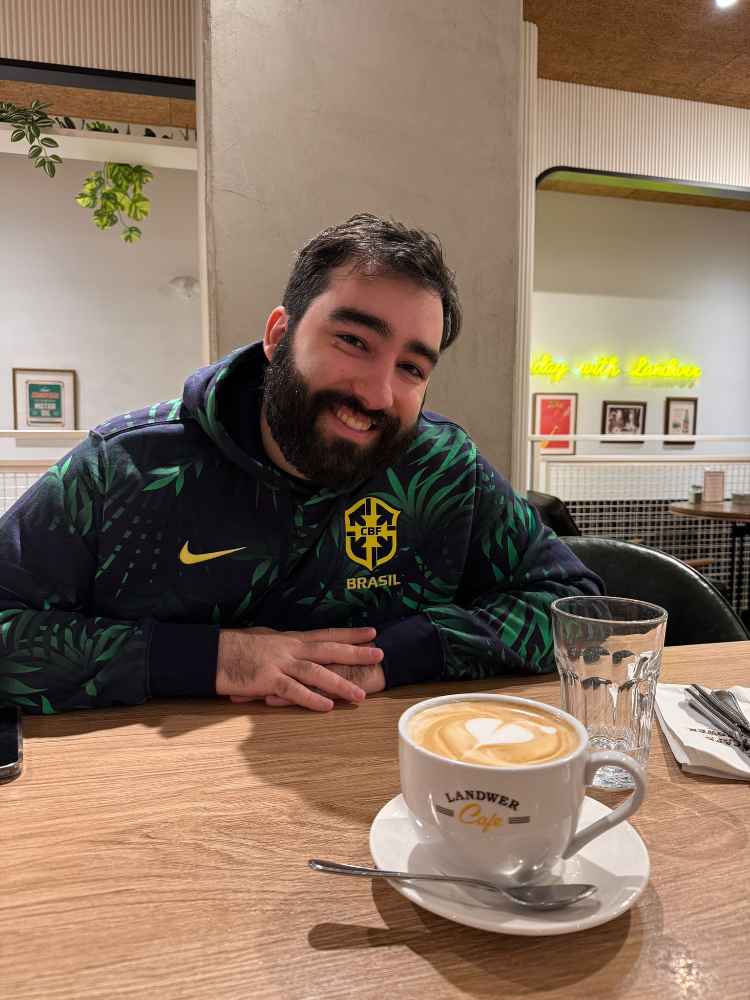

About

I was born in Brazil, and that's where my love for coffee started. As a kid, my grandma used to serve "pão de queijo" (baked cheese bread) with "pingado" (half drip coffee, half milk). I grew up drinking coffee every day without ever really knowing what went into a good cup.
I immigrated to Canada in my mid-twenties as an international student, and one of my first jobs was a couple of months at a Tim Hortons (Canada's largest coffee chain). It's far from a specialty coffee shop, but the barista training went deep enough to spark my curiosity. I bought a Nespresso Inissia not long after and started drinking more espresso than drip. A couple of years later, once my immigration process was more established, I was able to spend a bit more and pick up a proper espresso machine and grinder from Breville.
More recently, I started watching James Hoffmann's videos on YouTube and picked up his book, The World Atlas of Coffee. Since then I've been making my own espresso and milk drinks at home, and trying at least a couple of new beans every month. This website is where I keep a personal reference for myself, and hopefully a useful one for anyone else who loves coffee too.
Cafes
Cafes visited.
Social
Coffee-related posts from social media.
References
People worth checking out.